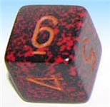
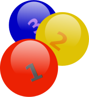

Using and Handling Data
What is Data?
How to Show Data
- Bar Graphs
- Pie Charts
- Dot Plots
- Line Graphs
- Scatter (x,y) Plots
- Pictographs
- Histograms
- Frequency Distribution and Grouped Frequency Distribution
- Stem and Leaf Plots
- Cumulative Tables and Graphs
- Graph Paper Maker
Surveys
Probability and Statistics
Measures of Central Value
- Finding a Central Value
- Calculate the Mean Value and The Mean Machine
- Find the Median Value
- Find the Mode or Modal Value
Advanced:
- Calculate the Mean from a Frequency Table
- Weighted Mean
- Geometric Mean
- Harmonic Mean
- More Advanced:Mean, Median and Mode from Grouped Frequencies
Measures of Spread

- The Range
- Quartiles and the Interquartile Range
- Percentiles
- Mean Deviation
- Standard Deviation
- Standard Deviation Calculator
- Standard Deviation Formulas
Comparing Data

Probability


Activities:
- An Experiment with a Die
- An Experiment with Dice
- Dropping a Coin onto a Grid
- Buffon's Needle
- Random Words
- Lotteries
Events
- Complement
- Probability: Types of Events
- Independent Events
- Dependent Events: Conditional Probability
- Tree Diagrams
- Mutually Exclusive Events

Combinations and Permutations
Advanced
- False Positives and False Negatives
- Bayes Theorem
- Shared Birthdays
- Confidence Intervals and Confidence Interval Calculator
- Chi-Square Test and Chi-Square Calculator
- Least Squares Regression and Least Squares Calculator
Random Variables
- Random Variables
- Random Variables - Continuous
- Random Variables - Mean, Variance and Standard Deviation
The Binomial Distribution
The Normal Distribution